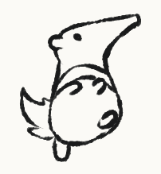

Animation Anteaters
Welcome
|  | Animation Anteaters is designed to unite artists of all levels to learn about the principles of animation. The goal of this club is to produce animated shorts and experience a production pipeline. All members will be encouraged to contribute story assets for the shorts. This is the club for artists interested in storyboarding, character design, visual development and layout, and animation. We aim to become a team that cooperates and progresses together in the arts. |
What We Do |
Our Goals |
|
|